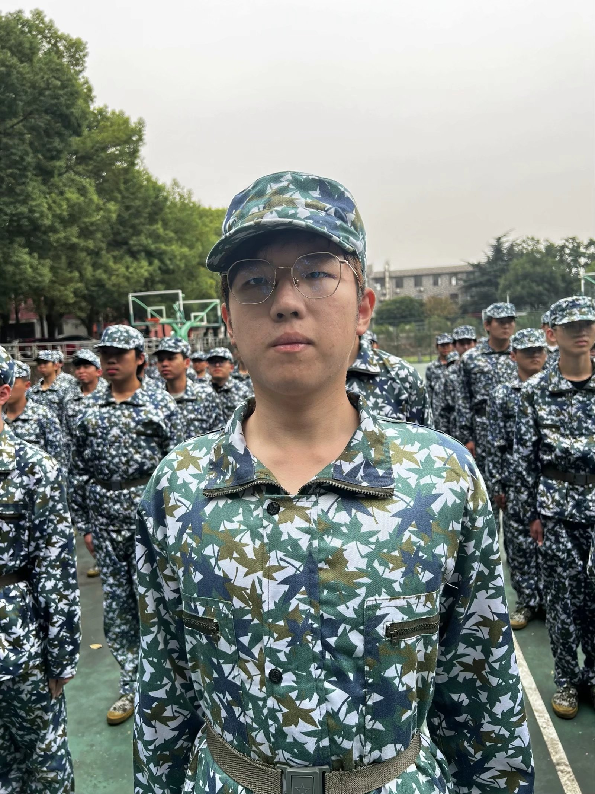
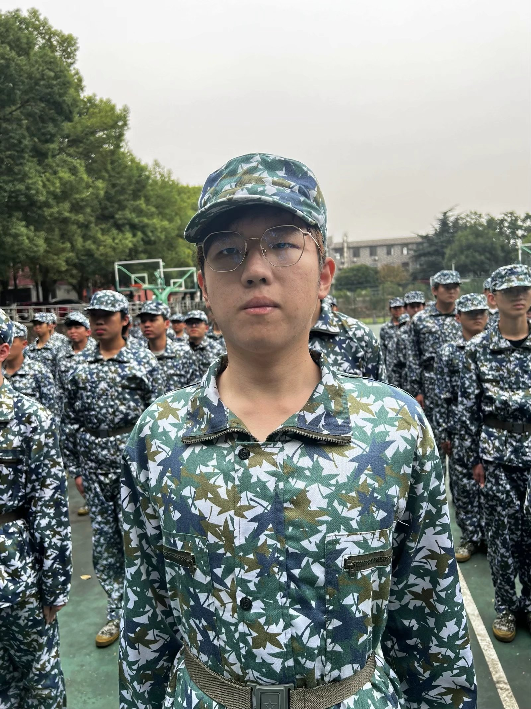

军训体会
军训在辛苦训练之余，也有许多有趣的活动。例如拔河比赛、拉歌比赛等。在拔河比赛上，我们班虽然输了，但输赢并不重要，过程才是关键。在拔河中我们学会了团结，学会了互相鼓励加油，学会了尽全力去做一件事情，这才是拔河比赛的真谛。
时间如流水般流去，半个月的军训转眼就成了回忆。回想着这次军训，一种潜藏在心中已久的感受便油然而生。的确，军训是很辛苦，但却辛苦得有收获，辛苦得有意义辛苦得让人难忘。难忘我们军训时的挥汗如雨，难忘平时训练时严肃的教官和我们开玩笑时的样子，难忘在最后一天会操时我们的卖力表演，大家都精神饱满地等待着汗水换来的成果，尽管最后并没有拿到第一名，但我们仍是胜利者，因为我们战胜了自己！
军训已是固化的记忆，但军训留下的共振余音仍在回响，要牢记军人作风，以铁的纪律来约束自己，以钢的意志来支配自己。只有懂得这样做，我们才对得起每天在一旁陪我们的老师，才对得起教官的尽心尽力的训练，才对得起我们自己挥洒的汗水!
 
